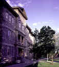

 |
Jacob Spori Building |
Although this
story may not seem extraordinary to anyone but myself, it is miraculous to me to be back
at Ricks College. I vividly remember the day when I, as a freshman student, sat in
my dorm, carefully and prayerfully reading course requirements for each major from the
Ricks College Catalogue. I remember thinking that I was interested in too many
different things. When I read the requirements for the Communicative Disorders
major, a calm excitement came over me. The required courses seemed to pull together
the wide range of my academic interests. The spirit confirmed that pursuing a major
in Communicative Disorders would be a good direction for me.
I met with Brother David Hillier, the advisor to
Communicative Disorders majors, to find out more about the program. He gently
challenged my decision, but then provided the support and vision I needed. A year
later he hired me as a student aid to help him administer hearing screenings and teach a
phonetics lab. Reflecting on that time, I realize I was not a polished assistant or
a perfect student, but Brother Hillier always gently instructed and encouraged me.
He had a wonderful way about him. The more I watched him as he worked, and
interacted with people, the more I came to admire him. He loved what he was
doing. I knew it must be an incredible blessing to work at Ricks College. One
day, near the end of my sophomore year, Brother Hillier asked the students in one of his
classes where they wanted to be in 10 years. I knew exactly what to say when it was
my turn. "I want your job," I said. And I did, more than anything,
want to take Brother Hillier's place. But everyone in the class just laughed, and so
did I.
Besides Brother Hillier, there were many other teachers
and leaders at Ricks who had a significant impact on me. I watched and admired the
way they lived and taught with the spirit. They were powerful, spiritual giants,
heroes, whose words and deeds went straight into my heart and strengthened me.
After graduation, I transferred to Idaho State
University, where I married an audiology student and earned my degree in speech-language
pathology. I then worked for three years at Magic Valley Speech & Language
Services, a private practice in Twin Falls, Idaho. Thoughts of working at
Ricks College had nearly disappeared, until one day in January of 1996 my wife called me
at work to tell me that Brother Hillier had called. He had told her he was retiring,
and wanted to find out if I still wanted his job. A longing but peaceful excitement
came over me. My wife, who once told me she never wanted to live in Rexburg, felt it
too. I did want his job. He told me that it wasn't up to him to decide who was
hired, but that he wanted me to know the job would be available if I wanted to apply.
Despite my excitement, however, I felt that with no teaching experience and only
three years in the field, I didn't have a chance, not to mention that I could never fill
Brother Hillier's shoes. But I simply couldn't pass up the opportunity, and knew
that even if I wasn't selected, I had to apply.
Throughout the application and interview process, I had
some wonderful experiences that were both humbling and gratifying. I have been a
Communication Department faculty since the Fall of 1996, and I thoroughly enjoy it.
I relish the opportunity to touch people's lives and, in a small way, contribute to
building the kingdom of God. I am honored and grateful to be a part of this
institution, and know I have a lot of work to do to be worthy of this blessing. |